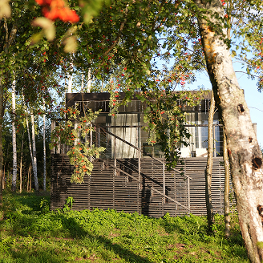
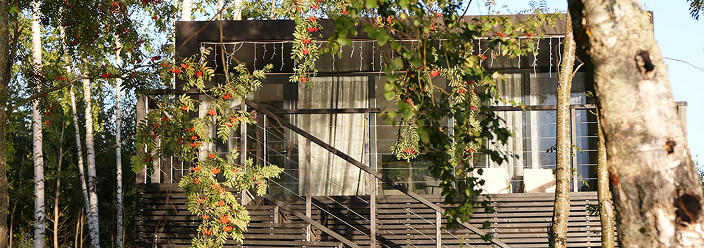
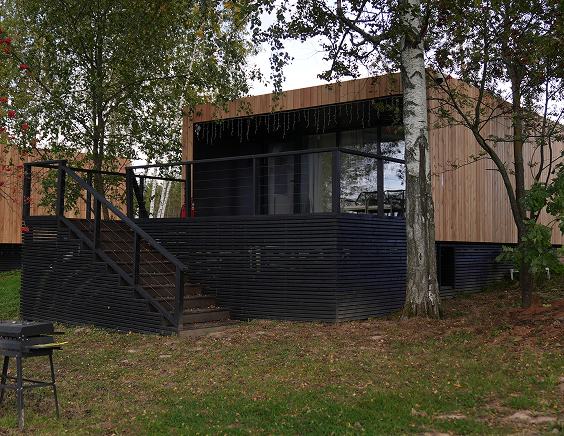
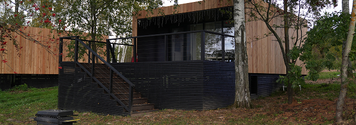

Несколько направлений
— одна цель


Основной целью Благотворительного фонда «Единая сила» является содействие в укреплении мира, дружбы и согласия между народами на территории Российской Федерации и ее новых территориях. Все проекты и инициативы Фонда разрабатываются и утверждаются Советом Фонда с учетом данной цели и реализуются на благо нашей страны.
В данном разделе нашего сайта вы можете ознакомиться и принять участие в наших благотворительных программах.
БЛАГОТВОРИТЕЛЬНАЯ ПРОГРАММА "ЕДИНАЯ СИЛА"
1. О программе
Благотворительная программа комплексного содействия в укреплении мира, дружбы и согласия между народами «Единая сила» (далее – Программа) реализуется Благотворительным фондом «Единая сила» (далее – Фонд) при поддержке благотворителей – физических и юридических лиц.
Краткое наименование: Благотворительная программа «Единая сила».
2. Описание ситуации
В современном мире, населению необходима социальная поддержка, защита граждан и содействие в укреплении мира и согласия между народами по ряду причин:
- Во-первых, социальная поддержка играет важную роль в обеспечении благополучия и качества жизни граждан. Социальные программы и поддержка помогают обеспечить основные потребности и поддержку тем, кто в них нуждается. Это создает более справедливое и равноправное общество.
- Во-вторых, содействие в укреплении мира и согласия между народами является неотъемлемой частью устойчивого развития общества. Мир и согласие являются основой для установления стабильных и продуктивных отношений между народами и культурами, проживающими на территории Российской Федерации, а также на новых территориях. Поощрение толерантности, межкультурного диалога и уважения к разнообразию помогает предотвратить конфликты и приводит к благополучию и сотрудничеству.
Благотворительная программа направлена на социальную поддержку, защиту граждан и содействие в укреплении мира и согласия между народами. Создана для обеспечения благополучия и стабильности в нашем обществе. Общество, которое заботится о своих гражданах, обеспечивая защиту, имеет больше шансов на устойчивое развитие и процветание.
3. Цели и задачи программы
Целями программы являются:
- Содействие в укреплении мира, дружбы и согласия между народами на территории Российской Федерации и ее новых территориях;
- Оказание помощи пострадавшим в результате стихийных действий, экологических, промышленных или иных катастроф, социальных, национальных, религиозных конфликтов, жертвам репрессий, беженцам и вынужденным переселенцам;
- Участие в совершенствовании механизмов обеспечения и защиты прав и законных интересов человека;
- Участие в проведении мероприятий по предупреждению гуманитарной катастрофы и ликвидации ее последствий;
Задачами программы являются:
- Осуществление благотворительной помощи путем поставки необходимых ресурсов в соответствии с законодательством Российской Федерации о благотворительной деятельности;
- Содействие в организации и реализации социальных и благотворительных программ в области социальной поддержки и защиты граждан, содействие в укреплении мира, дружбы и согласия между народами, предотвращение социальных, национальных, религиозных конфликтов;
- Учреждение средств массовой информации, владение, пользование и распоряжение ими для реализации уставной цели Фонда;
- Осуществление поддержки веб-сайта по тематике деятельности Фонда;
- Проведение рекламных кампаний о деятельности Фонда, его структур, в том числе в электронных СМИ и сети Интернет для реализации уставной цели Фонда;
- Привлечение пожертвований, инвестиций и иных ресурсов, в том числе иностранных, для реализации проектов, направленных на достижение уставной цели Фонда.
- Содействие некоммерческим организациям и гражданам в рамках деятельности в сфере профилактики и охраны здоровья граждан, а также улучшения морально-психологического состояния граждан, деятельности в области физической культуры и спорта (за исключением профессионального спорта), охраны окружающей среды и защиты животных, охране и должного содержания зданий, объектов и территорий, имеющих историческое, культовое, культурное или природоохранное значение, и мест захоронения, защиты материнства, детства и отцовства, укрепления престижа и роли семьи в обществе, укрепления мира, дружбы и согласия между народами, предотвращения социальных, национальных, религиозных конфликтов.
- Информационное освещение и популяризация благотворительной и добровольческой (волонтерской) деятельности, социально направленных инициатив и проектов, а также привлечение внимания к деятельности некоммерческих организаций.
4. География программы
Программа реализуется на территории Российской Федерации.
5. Участники программы
Некоммерческие организации, коммерческие организации, зарегистрированные и/или ведущие свою деятельность на территории реализации Программы в соответствии с законодательством Российской Федерации, инициативные группы граждан, физические лица.
6. Этапы реализации Программы
Этапы реализации Программы сочетают цикличный и разовый форматы осуществления мероприятий, указанных в разделе 7.1 Положения.
7. Основное мероприятие Программы
Помощь жителям и военнослужащим, находящимся на новых территориях Российской Федерации. Поставка необходимых ресурсов для укрепления мира, дружбы и согласия между народами, предотвращения социальных, национальных, религиозных конфликтов.
Мероприятия в рамках реализации направлений Программы
- Привлечение пожертвований, инвестиций и иных ресурсов, в том числе иностранных, для реализации проектов, направленных на достижение уставной цели Фонда;
- Поиск надежных поставщиков технического оборудования и товаров для гуманитарной помощи с целью обеспечения качественных и необходимых ресурсов;
- Организация работы волонтерского штаба;
- Разработка и осуществление логистических мероприятий для отправки необходимых ресурсов контрагентам (организациям, физ. лицам);
- Подготовка отчетных документов по проведенным благотворительным мероприятиям.
8.Планируемые результаты Программы
По результатам проводимых в рамках Программы мероприятий:
- Будет повышено количество граждан и компаний, вовлеченных в деятельность по решению социальных проблем, больше граждан будет проинформировано об участниках, целях, мероприятиях и иных элементах благотворительной и волонтерской деятельности, о способах и формах решения социальных проблем;
- Будет реализована программа в области социальной поддержки и защиты граждан, способствующая укреплению мира, дружбы и согласию между народами, предотвращающая социальные, национальные, религиозные конфликты;
- Будет повышен уровень знаний и навыков работников некоммерческих организаций, волонтеров, специалистов помогающих профессий.
9. Органы Программы
Для внесения изменений в Программу требуется одобрение Совета Фонда, поскольку она находится под его управлением. В процессе осуществления направлений и мероприятий Программы могут быть созданы коллегиальные органы. Деятельность этих органов регулируется специальными положениями, которые утверждаются Директором Фонда.
10. Источники финансирования Программы
Программа финансируется за счет благотворительных взносов от юридических и физических лиц.
11. Распространение информации о реализации Программы
Документы Программы, отчеты о реализации Программы, информация о сумме пожертвований, а также о запланированных и проведенных мероприятиях публикуются Фондом/Программой на официальном сайте Фонда, в социальных сетях и других коммуникационных каналах. Фонд оставляет за собой право использовать полученную информацию в процессе реализации Программы в целях накопления и распространения опыта и практик благотворительной деятельности, а также для исследовательских и статистических целей.

